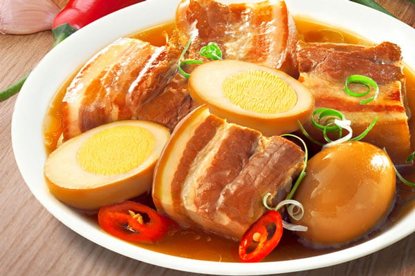

Thit Kho Trung (Vietnamese braised pork belly with eggs) is a beloved, comforting classic that centers around a rich, balance of sweet and savory flavors. The recipe begins by marinating thick chunks of pork belly in fish sauce, shallots, garlic, and sugar. The magic happens during the slow braising process, where the pork simmers gently in fresh coconut water mixed with a caramelized sugar base (nuoc mau). Halfway through cooking, hard-boiled eggs (or sometimes quail eggs) are added to the pot, absorbing the deep amber hue and savory juices of the broth. Over an hour or two, the fat transforms into a melt-in-your-mouth texture while the meat becomes incredibly tender, resulting in a deeply satisfying dish traditionally served over a hot bowl of jasmine rice with a side of pickled vegetables to cut through the richness.
Combine your blanched pork belly blocks with the 3 tbsp fish sauce, 2 tbsp sugar, minced shallots, minced garlic, and black pepper. Mix well and let it sit at room temperature so the flavors penetrate the meat.
Combine your blanched pork belly blocks with the In your cooking pot, add 1 tbsp sugar and 1 tbsp water over medium heat. Let it melt and bubble. Do not stir. Watch it closely, once it turns a deep amber, reddish-brown color, immediately move to the next step.
Carefully add the marinated pork blocks (leaving excess liquid behind for now) into the hot caramel. Toss the meat quickly to coat it evenly in the color and sear the edges until the pork firms up.
Pour in the coconut water and any remaining marinade until the pork is fully submerged. Bring it to a boil, skim off any foam that rises to the top, then drop the heat to low. Cover with a lid left slightly ajar and let it gently simmer.
Gently slide your peeled hard-boiled eggs into the broth. Continue to simmer uncovered on low heat. The broth will reduce, the pork will become incredibly tender, and the eggs will turn a beautiful golden-brown. Taste the sauce and add that extra 1 tbsp of fish sauce if you want it more savory.
Slice the eggs in half. Put them and the pork belly neatly onto a plate. Add some of that delicious broth. Finishing touch with some scallions and sliced chillies and the dish is done!